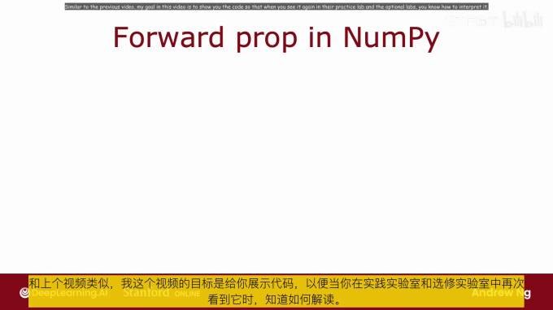
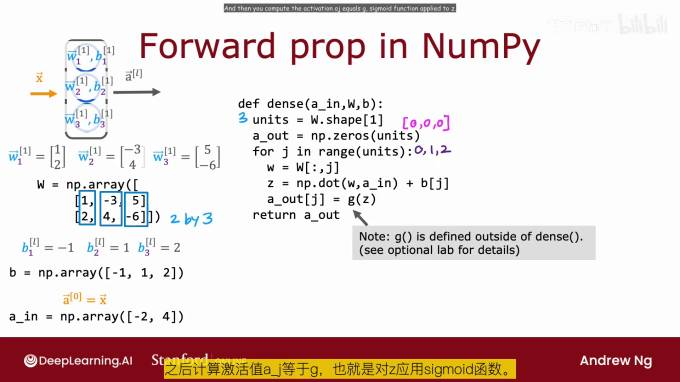
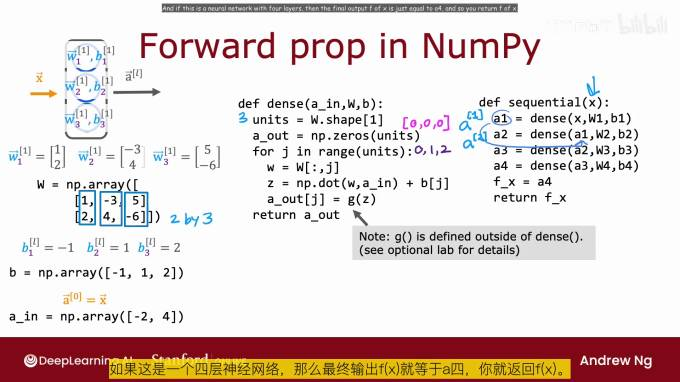
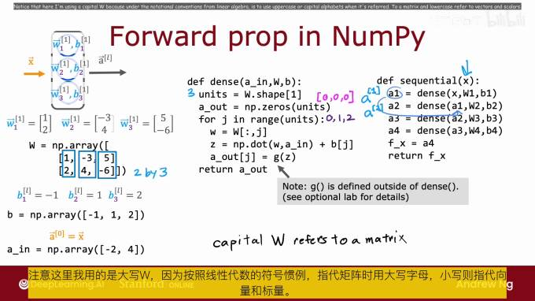

上个视频中，你看到了如何在 Python 中实现前向传播，但那是通过为每一个神经元硬编码代码行来实现的。00:03
现在，我们来看看在 Python 中更通用的前向传播实现。00:13
和上个视频类似，我这个视频的目标是给你展示代码，以便当你在实践实验室和选修实验室中再次看到它时，知道如何解读。N。00:18

所以，在我们讲解这个例子时，不用担心要记下每一行代码。00:30
如果你能通读代码并理解它，那绝对就足够了。00:36
你可以做的是，编写一个函数来实现一个全连接层，也就是神经网络中的单层。00:40
我来定义一个 dense 函数，它接收来自上一层的激活值，以及给定层中神经元的参数 w 和 b 作为输入。9。00:49
用上个视频的例子，如果第一层有三个神经元，并且 W 一、W 二、W 三是这些，那么我们要做的就是把所有这些权重向量堆叠成一个矩阵。01:02
这将是一个二乘三矩阵，第一列是参数 w 一一，第二列是参数 w 一二，第三列是参数 w 一三。01:23
类似地，如果你有参数 b，b 一一等于负一，b 一二等于一等等，那么我们将把这三个数字堆叠成一个一维数组 b，如下所示：负一，一，二。01:41
所以，dense 函数要做的是，接收上一层的激活值作为输入，这里的 a 可以是 a 零，也就是等于 x，或者是来自后面层的激活值，同时接收如右侧所示按列堆叠的 w 参数，以及左侧所示也堆叠成一维数组的 b 参数。n。01:59
这个函数将输入前一层的激活值 a，然后输出当前层的激活值。02:27
我们逐步来看实现这个的代码。02:38
这是代码：首先，units 等于 W 点 shape 一。02:42
这里的 W 是一个二乘三矩阵，所以列数是三。02:47
这等于该层中单元的个数。02:54
所以，这里 units 将等于三。02:57
查看 W 的 shape 就是提取出隐藏单元数或该层单元数的一种方法。03:00
接着，我们将 A 设为一个由零组成的数组，其元素个数与单元数相同。03:10
在这个例子中，我们需要输出三个激活值。03:17
所以这会将 A 初始化为零，零，零，一个包含三个零的数组。03:22
然后，我们通过一个 for 循环来计算 A 的第一个、第二个和第三个元素。03:29
对于 J 在 range(units)中，所以 J 从零到 units 减一，即从零、一、二，按 Python 惯例从零开始索引1。03:36
这个命令 w 等于大写，J，这是你在 Python 中提取矩阵第 J 列的方法。03:48
所以循环第一次，这会提取 W 的第一列，也就是 W—一。04:00
循环第二次，当你计算第二个单元的激活值时，它会提取对应 W 一二的第二列，以此类推，循环第三次也是如此。04:09
然后你用通常的公式计算 z，即参数 w 与接收到的激活值做点乘，再加上。04:21
之后计算激活值 a_等于 g，也就是对 z 应用 sigmoid 函数。04:33

循环三次，你就为激活值向量 a 计算出了所有三个值。04:41
所以，dense 函数的作用是，输入来自前一层的激活值，并根据当前层的参数，返回下一层的激活值。04:51
有了 dense 函数，你可以这样将几个全连接层按顺序串接起来，实现神经网络中的前向传播。05:03
你可以计算激活值 a 一为：a 一等于 dense(X,W 一,B 一)，这里的 W 一、B 一是第一个隐藏层的参数，有时也称作权重。05:16
然后你可以计算 a 二为：dense(刚才算出的 a 一,W 二,B 二)，W 二、B 二是第二个隐藏层的参数或权重，接着计算 a 三和 a 四。g。05:33
如果这是一个四层神经网络，那么最终输出 f(x)就等于 a 四，你就返回 f(x)。05:50

注意这里我用的是大写 W，因为按照线性代数的符号惯例，指代矩阵时用大写字母，小写则指代向量和标量。06:02

所以，因为它是矩阵，这就是大写 W。06:17
你现在知道如何从零开始自己实现前向传播了。06:24
而且你将在这个视频后的实践实验室里，亲自看到、运行并练习所有这些代码。06:29
我认为，即使你在使用像 TensorFlow 这样强大的库，了解其底层工作原理也是很有帮助的。06:38
因为，万一出了什么错，万一运行得非常慢，或者你得到一个奇怪的结果，又或者看起来像是有个 bug，你理解实际发生了什么的能力，将使你在调试代码时高效得多。06:47
我运行机器学习流程的时候，很多时候它其实跑不通，当然很少第一次就跑通。07:04
所以，我发现调试代码的能力，不论是 TensorFlow 代码还是其他，对于成为一名高效的机器学习工程师真的很重要。07:11
因此，即使你在使用 TensorFlow 或其他框架，我希望你发现这种更深层的理解对你的应用和调试自己的机器学习流程也同样有用。07:21
这是本周最后一个包含代码的必修视频。07:37
在下个视频中，我想深入探讨一个我认为既有趣又迷人的话题，那就是神经网络与 A 或 AGI（通用人工智能）之间的关系。07:41
这是个有争议的话题，但因为它被广泛讨论，我想和你分享一些我对此的看法。07:53
这样，当你被问到神经网络是否在通往人类水平智能的道路上时，你就有了一个思考这个问题的框架。08:00
那么，让我们在下个视频中，去看看这个我觉得很有趣的话题吧。08:11